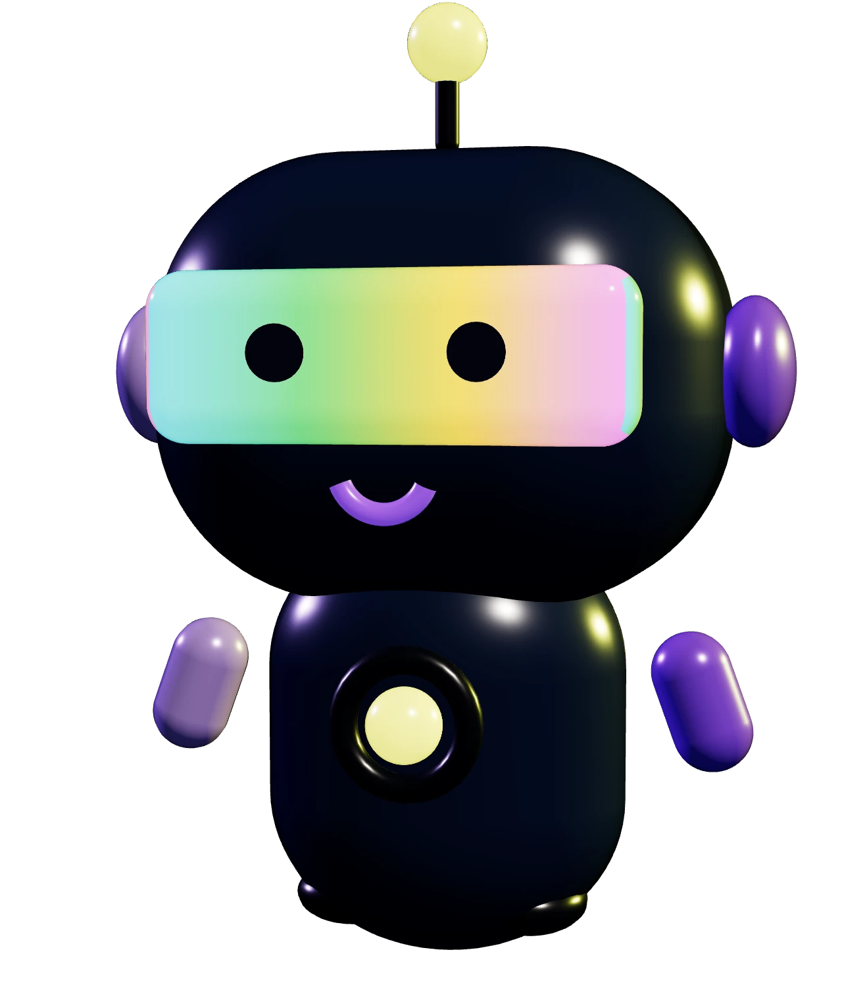

Las mismas animaciones que ship en la app (PR #77), sobre el bordy-m2.webp actual. Toca un estado para dispararlo; cambia la paleta para ver Clásico vs Premium.

Estado actual: reposo
Estados (dispara la animación)
· Reposo: respira + doble parpadeo del LED cada 5.5s
· Acierto: salto con anticipación · Racha: voltereta 360°
· Fallo: sacudida + mareo woozy · Desvío: "no-no" suave
· Pensando: se asoma + puntitos (sostenido hasta que cambies)
Paleta
La paleta cambia el fondo y el color de las chispas/puntitos (que usan el oro/lavanda del tema). Los colores del LED por estado son semánticos (semáforo) y NO cambian con el tema — igual que en la app.